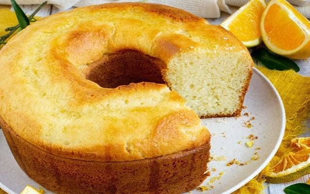

Bolo de Laranja do Junior

Ingredientes
- 4 ovos
- 1 xícara (chá) de óleo
- casca de 1 laranja
- 1 colher (sopa) de fermentoó
- 2 xícaras (chá) de açúcar
- suco de 2 laranjas
- 2 xícaras (chá) de farinha de trigo
Modo de Preparo
- Bata no liquidificador os ovos, o açúcar, o óleo, o suco e a casca da laranja.
- Passe para uma tigela e acrescente a farinha de trigo e o fermento.
- Leve para assar em uma forma com furo central, untada e enfarinhada, por mais ou menos 30 minutos.
- Desenforme o bolo e molhe com suco de laranja.


Modo de preparo para o bolo de laranja